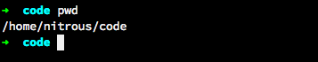
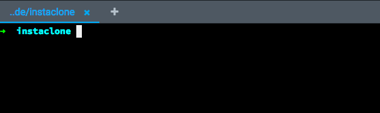
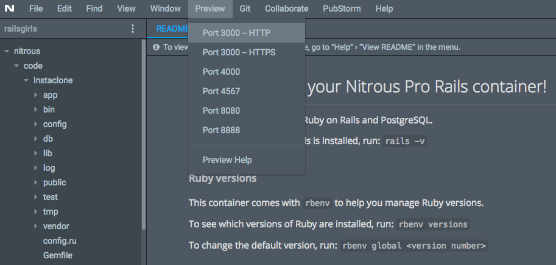
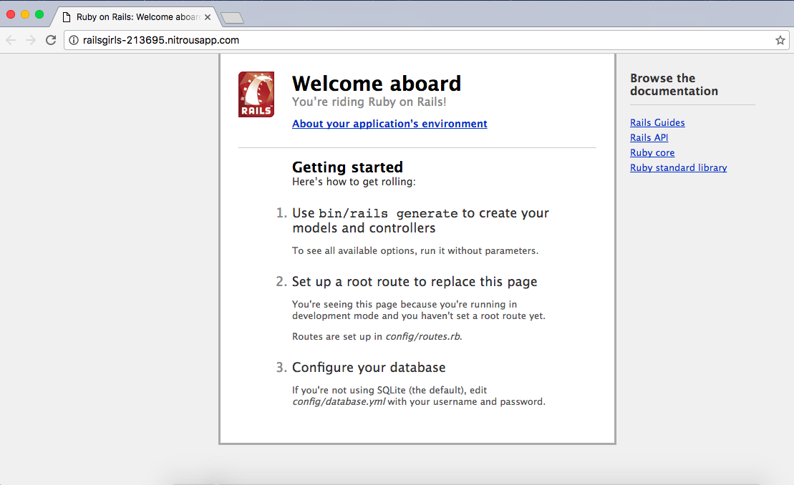
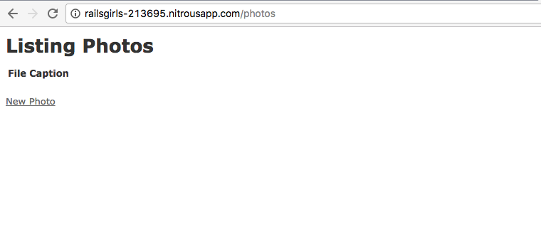
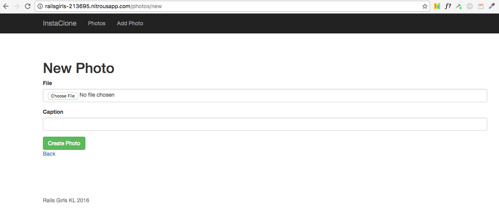

Created by Vesa Vänskä, @vesan
Compiled for RailsGirlsKL by Faezrah, @railsgirlskl
Previous contributors: Josh Teng @joshZteng, Wunmin @ubikentang, Nguyen
We're going to create a new Rails application, and it's going to be a photo gallery.
Hope you already followed the quick setup guide for Nitrous. Then open your new railsgirls workspace in Nitrous.
Next, type these commands in the terminal:
{% highlight sh %}$ cd code {% endhighlight %}Don't type the $ character. The $ character is a cue that you should enter the command in the terminal.
Make sure you are in the correct folder, by typing:
{% highlight sh %}$ pwd {% endhighlight %}You should see:
Now, let's create our first Rails app:
{% highlight sh %}$ rails new instaclone {% endhighlight %}When you run this command, it will install all the necessary files and folders for your first Rails application. Note it may take some time to finish the installation.
Once it's done, you need to go to your newly created Rails app by typing:
{% highlight sh %}$ cd instaclone {% endhighlight %}You can then start the rails server by running:
{% highlight sh %}$ bin/rails server -b 0.0.0.0 {% endhighlight %}Notice now in the terminal, the command prompt is not visible. The command prompt looks like this:
This is because you are now in the Rails server in that terminal tab.
When the command prompt is not visible you cannot execute new commands. If you try running cd or another command it will not work. To return to the normal command prompt, hit CTRL + C in the terminal to quit the server.
If you want to run other commands, simply open another terminal tab by clicking + sign next to current terminal tab.
Tip: You can keep two terminal tabs open. One for running the server and other to run all the commands.
Mentor: Explain what each command does. What was generated? What does the server do?
Preview your new app by clicking on the Preview tab.
Notice your URL should look something like this: http://railsgirls-213695.nitrousapp.com/
You should see "Welcome aboard" page, which means that the generation of your new app worked correctly.
Checkpoint: Your default Rails app page should look like this:
We're going to use Rails' scaffold functionality to generate a starting point that allows us to list, add, remove, edit, and view things; in our case photos.
Mentor: What is Rails scaffolding? (Explain the command, the model name and related database table, naming conventions, attributes and types, etc.) What are migrations and why do you need them?
{% highlight sh %}$ bin/rails generate scaffold photo file:string caption:string {% endhighlight %}The scaffold creates new files in your project directory, but to get it to work properly we need to run a couple of other commands to update our database and restart the server.
{% highlight sh %} $ bin/rake db:migrate $ bin/rails server -b 0.0.0.0 {% endhighlight %}Then preview in the browser, you should append /photos to the URL shown in the address bar of your browser.
You should see an empty page with the title "Listing photos". At the bottom you will see a link to add a "New Photo".
Play around with this a little. We got all these when we ran those scaffold commands earlier.
Checkpoint: Your listing photos page should look something like this:
Mentor: Talk about the relationship between HTML and Rails. What part of views is HTML and what is Embedded Ruby (ERB)? What is MVC and how does this relate to it? (Models and controllers are responsible for generating the HTML views.)
The app doesn't look very nice yet. Let's do something about that. We'll use Bootstrap to give us nicer styling really easily.
In Nitrous, use the file browser to open Gemfile.
Below the line:
{% highlight erb %} <%= stylesheet_link_tag "application", media: "all", "data-turbolinks-track" => true %> {% endhighlight %}Add:
{% highlight ruby %} {% endhighlight %}Then replace:
{% highlight erb %} <%= yield %> {% endhighlight %}With:
{% highlight erb %}Let's also add a navigation bar and footer to the layout. In the same file, right under <body> add:
And before </body> add:
Don't forget to save your work everytime you make changes.
Now let's also change the styling of the photos table. Open app/assets/stylesheets/application.css and at the bottom add:
Then remove all of its content, and replace with:
{% highlight scss %} body { padding-top: 100px; } footer { margin-top: 100px; } table, td, th { vertical-align: middle; border: none; } th { border-bottom: 1px solid #DDD; } {% endhighlight %}Finally, delete the file app/assets/stylesheets/scaffolds.scss because we don't really need the default style generated by Rails.
Now make sure you saved your files and refresh the browser tab previewing your app to see what was changed. You can also change the HTML & CSS further.
Mentor: Talk a little about CSS and layouts.
Considering "photo" is the most important object in your app, we are going to put the "Add Photo" button on the navigation bar to make it always available.
Open app/views/layouts/application.html.erb, under the line:
Add:
{% highlight erb %}We need to install a piece of software to let us upload files in Rails.
Open Gemfile in the project directory using your text editor and under the line
Add:
{% highlight ruby %} gem 'carrierwave' {% endhighlight %}Mentor: Explain what libraries are and why they are useful. Describe what open source software is.
Hit CTRL + C in the terminal to quit the server.
In the terminal run:
{% highlight sh %}$ bundle install {% endhighlight %}Now we can generate the code for handling uploads. In the terminal run:
{% highlight sh %}$ bin/rails generate uploader Picture {% endhighlight %}At this point you need to restart the Rails server process in the terminal.
Note: Some people might be using a second terminal to run the rails server continuously. If so you need to restart the Rails server process now. This is needed for the app to load the added library.
Go to the terminal tab which runs the server and then hit CTRL + C to quit the server. Once it has stopped, you can press the up arrow to get to the last command entered, then hit enter to start the server again.
Open app/models/photo.rb and under the line:
Add:
{% highlight ruby %} mount_uploader :file, PictureUploader {% endhighlight %}Open app/views/photos/_form.html.erb and change:
To:
{% highlight erb %} <%= f.file_field :file %> {% endhighlight %}Sometimes, you might get an TypeError: can't cast ActionDispatch::Http::UploadedFile to string.
If this happens, in file app/views/photos/_form.html.erb change the line:
To:
{% highlight erb %} <%= form_for @photo, html: { multipart: true } do |f| %> {% endhighlight %}In your browser, again click on the New Photo link. This time we can actually add a new photo. When you upload an image it doesn't look nice because it only shows a path to the file, so let's fix that.
Open app/views/photos/show.html.erb and change:
To:
{% highlight erb %} <%= image_tag(@photo.file_url, width: 600) if @photo.file.present? %> {% endhighlight %}Now refresh your browser to see what changed.
Mentor: Talk a little about HTML.
Now that you have an upload form that works, let's make it look nice with the help of Bootstrap.
Open app/views/photos/_form.html.erb, where you see:
Change to:
{% highlight html %}And add a form-control CSS class into each form input
To make the button look nice, add a btn btn-success CSS class to it, like so:
Checkpoint: My photo upload form looks like this:
Now it's time to make the photo gallery (photo list) look more professional. For that, we are going to replace the table layout with a div layout.
Mentor: Talk a little about table vs div (semantic markup).
Open app/views/photos/index.html.erb and replace all lines with:
No photos found.
<% end %> {% endhighlight %}Mentor: Explain what the new code means line by line, and talk a little about Bootstrap 12 grids layout.
Refresh it! We get a nice looking photo gallery. Click the "New Photo" button, and add more photos with real text - the page will look much better with content. There is a principle of contemporary web design: content is the best decoration.
Click the title of a photo, and you will be brought to the details page of the photo. Now it is still scaffold generated by Rails, so let's make it better.
Open app/views/photos/show.html.erb and replace all lines with
<%= notice %>
Caption: <%= @photo.caption %>
Mentor: Explain what the new code means line by line.
If go to the index page of your app (that's your app URL without /photos part) it still shows the "Welcome aboard" page. Let's make it go directly to the photos page.
Open config/routes.rb and after the first line add
Then will need to delete the index.html from the /public/ folder.
Test the change by refreshing the preview page in your browser.
Mentor: Talk about routes, and include details on the order of routes and their relation to static files.
Lets add a static page to our app that will hold information about the author of this application — you!
{% highlight sh %} $ bin/rails generate controller pages about {% endhighlight %}This command will create you a new folder under app/views called /pages and under that a file called info.html.erb which will be your info page.
{% highlight erb %} get "pages/about" {% endhighlight %}It also adds a new simple route to your routes.rb.
Now you can open the file app/views/pages/info.html.erb and add information about you in HTML and append /pages/about to the URL to see your new about page.
To add a link to the info page, open the file app/views/layouts/application.html.erb, and insert:
In between:
{% highlight html %}